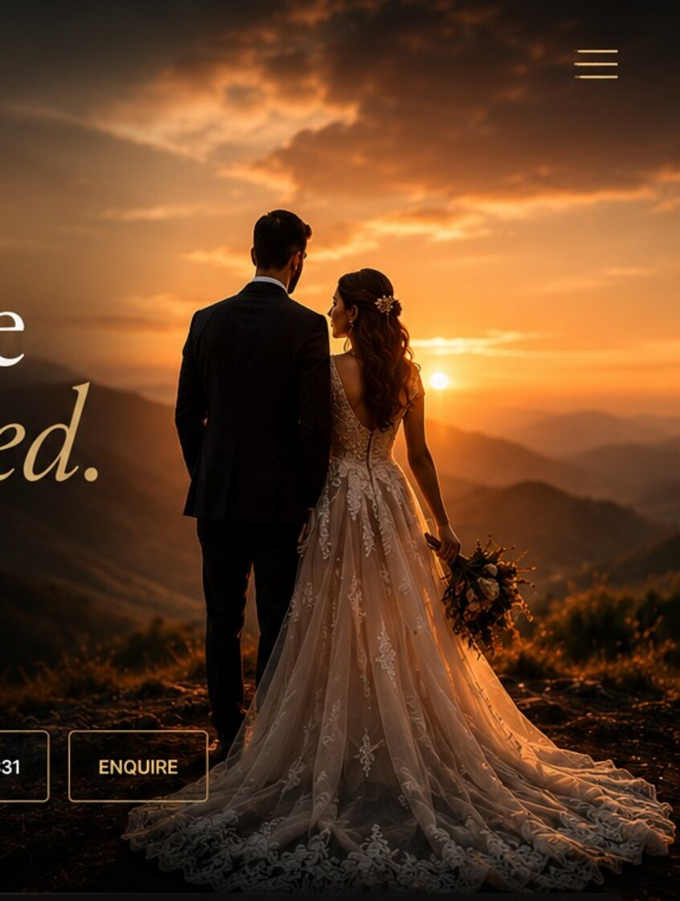

01
The quiet before
the ceremony
Light, nerves, flowers and the people who make the morning.

Independent image studio · Assam / India
We build photographs that feel lived-in, cinematic and unmistakably yours. Quiet observation meets confident direction, creating a body of work that belongs on a wall as much as it belongs in an album.

We care about light, composition and the tiny unscripted gestures that make a photograph feel alive.
Our work is designed around people rather than poses — whether it's a wedding morning, a family portrait or a brand with something to say.
Work with us →Light, nerves, flowers and the people who make the morning.
A story is stronger when it has beginning, middle and aftermath.
Films and stills working together as one visual experience.
Based in Assam. Available for celebrations, portraits, events and destination commissions.
Start an enquiry ↗